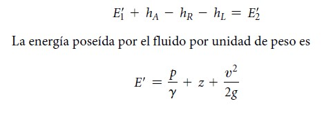

La ecuación general de la energía es una extensión de la ecuación de Bernoulli, el cual posibilita resolver problemas en los que hay pérdida y ganancia de energía. En la figura (1) se aprecia la interpretación lógica de la ecuación de la energía, la cual representa un sistema de flujo. Los términos E’1 y E’2 denotan la energía que posee el fluido por unidad de peso en las secciones 1 y 2, respectivamente. Se muestran las energías agregadas, removidas y pérdidas hA, hR y hL. Para un sistema tal, la expresión del principio de conservación de la energía es:


Nota: Mecánica de Fluidos. 7 ed. (2015. pág. 158). por Mott, R.L. & Untener J.A.
Por lo tanto, la siguiente la ecuación general de la energía queda denotado por:
Las pérdidas y ganancias de energía en un sistema se contabilizan en términos de energía por unidad de peso del fluido que circula por él. Esto también se conoce como carga. Como abreviación de la carga empleamos el símbolo h, para las pérdidas y ganancias de energía.
Por lo tanto, en la ecuación general de la energía (1) los términos hA, hR y hL significan:
- hA = Energía que se agrega al fluido con un dispositivo mecánico, como una bomba; es frecuente que se le denomine carga total sobre la bomba.
- hR = Energía que se remueve del fluido por medio de un dispositivo mecánico, como un motor de fluido.
- hL = Pérdidas de energía del sistema por la fricción en las tuberías, o pérdidas menores por válvulas y otros accesorios.
(P/γ) donde P es presión en el punto & γ es el peso específico del fluido
Unidades:
P = kPa (sistema Internacional) 1 kPa = 1 kN/m2
P = psi (sistema Inglés) 1 psi = 1 lbf/in2
γ = KN/m3 (sistema internacional)
γ = lbf/in3 (Sistema inglés)
Termino de la altura = se simboliza con la letra z
(V2/2g) donde V es la velocidad del fluido y g gravedad
V = m/s (sistema internacional)
V= in/s (sistema ingles)
g = 9,81 m/s2 (sistema internacional)
g= 386,4 in/s2 (sistema ingles)
Mott, R.L. & Untener J.A. (2015). Mecánica de Fluidos. 7 ed., pág. 158-159. México: Pearson Educación de México, S.A. de C.V.